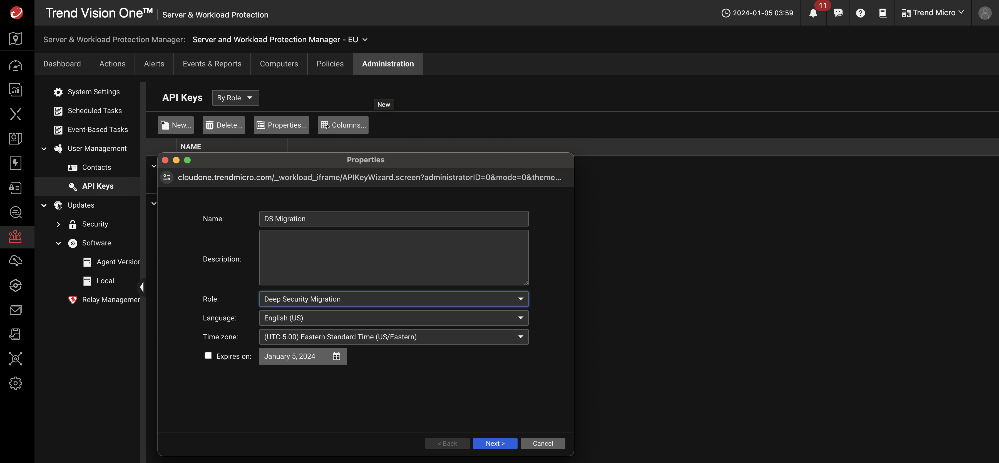
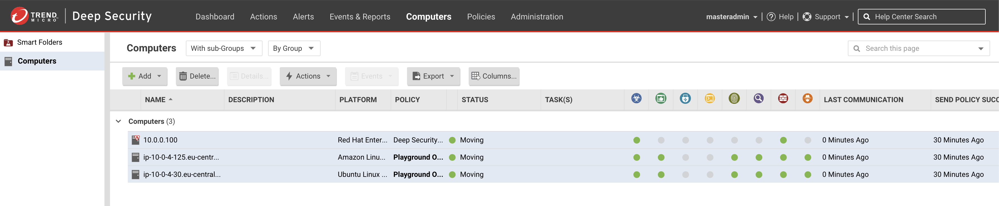
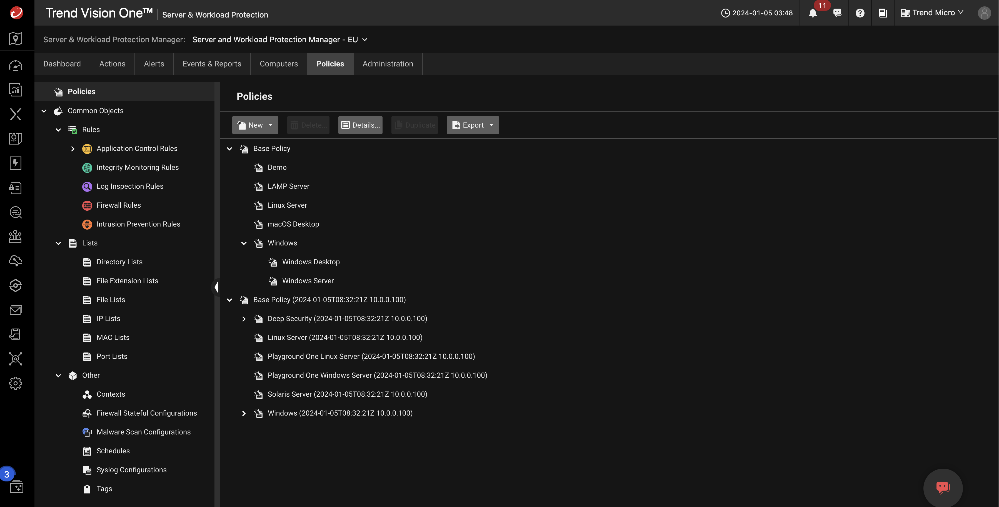
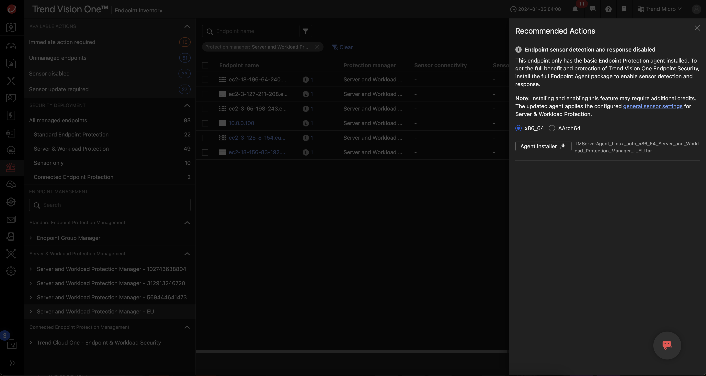
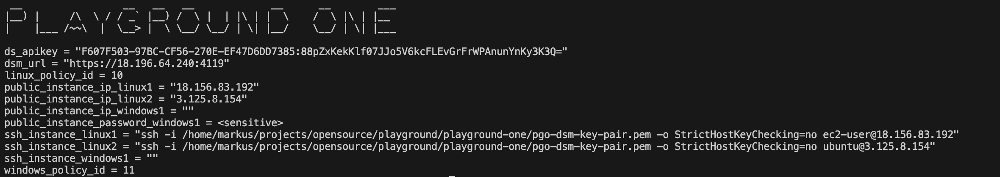
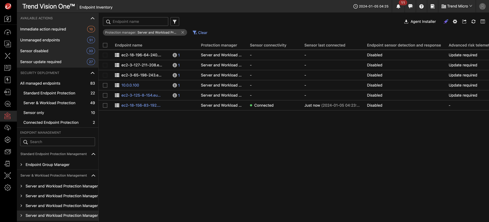
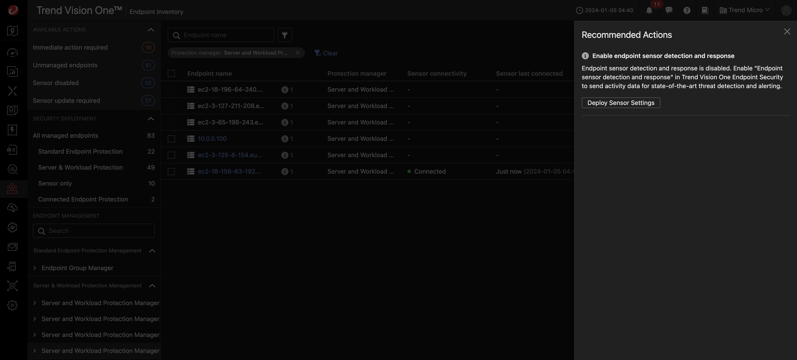
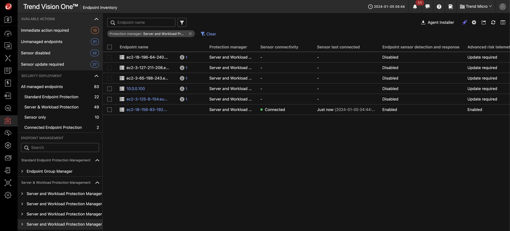

Scenario: Migrate Deep Security to Vision One¶
Why Migrate to Vision One SaaS¶
- Power of the Cloud.
- Get the latest features continuously.
- Infinitely scalable architecture.
- Remove physical infrastructure costs & maintenance.
- Data Privacy, Security & Compliance.
- Compliance certified: PCI-DSS, ISO, SOC.
- Multiple Regional Data Centers.
- Data privacy.
- Reduce time spent on audits.
- Simplified Operations & Monitoring.
- 24 x 7 x 365 always available.
- Physically secure cloud environment.
- Monitored by Trend Micro staff.
Prerequisites¶
- Playground One Deep Security
- Playground One Deep Security Workload
The Playground One can provide a simulated on-premise Deep Security deployment. For simulation purposes it creates a dedicated VPC with the most commonly used architecture, private and public subnets accross two availability zones.
Deep Security itself is located within the private subnet and uses a RDS Postgres as the database. The Deep Security Workload configuration creates two linux and one windows server with a deployed and activated Deep Security Agent. Some essential configurations in Deep Security are executed via REST. These are (amongst others):
- Creation of a Windows and Linux Policy with valid configurations for the security modules
- Activation of agent initiated activation
- Scheduling a recommendation scan for all created instances
Verify, that you have Enable Deep Security enabled in your configuration and have set a valid Deep Security License.
...
Section: Deep Security (on-prem)
Please set/update your Deep Security configuration
Enable Deep Security? [true]:
Deep Security License [AP-FHMD-FU...]:
Deep Security Username [masteradmin]:
Deep Security Password [trendmicro]:
...
Now, deploy Deep Security and Deep Security Workload configurations by running:
Current Situation¶
- Deep Security is securing (simulated) on-premise instances.
- Since you want to move to the Vision One platform you want to migrate Deep Security protected computers to Vision One Server & Workload Protection.
Migration Workflow¶
Vision One
- Log in to Trend Vision One, and go to
Endpoint Security Operations --> Server & Workload Protection. Choose an existing target instance of Server & Workload Protection. - Navigate to
Administration > User Management > API keys. - Create a new API key with the predefined role “Deep Security Migration” and save the key for later use.

Deep Security
- Go to DSM and use the feature Migrate to Workload Security.
Support --> Migrate to Workload Security. - When using this feature, it will need the API key and region. Specify them based on the result of the previous steps.
- In the tab
Configurationsselect the Common Objects you want to migrate: - Directory Exclusions (Windows). To migrate this select is and press
[Migrate Selected]. - Same for the other Common Objects.
- In the same tab click on the drop down
Migrate Policy (includes references Common Objects)and press[Migrate Selected]. - In the tab
Cloud Accountsselect the cloud accounts to migrate. - In the tab
Agentsclick onMigrate using Computers page. - Select the agents to migrate in the Computers page. Right click on a selected Computer and go to
Actions --> Migrate to Workload Security. - In the
Cloud One Workload Security Agent Reactivation Configurationsadapt the settings when needed and check thatSecurity Policy --> Assign migrated policyis activated. - Press the button
[Migrate] - Review the Migration Summary.

Turns to

If the migration is successful, the DSM UI’s status will show “Migrated” or “Move Complete”.
Vision One
In Trend Vision One Server & Workload Protection, you will also see the new migrated objects appear.

The migrated policy tree shows the migrated policies including it's dependencies:

(Optional): Deploy full Endpoint Agent Package¶
The migrated endpoints only have the basic Endpoint Protection agent installed. To get the full benefit and protection of Trend Vision One Endpoint Security, install the full Endpoint Agent package to enable sensor detection and response.
- Go to
Endpoint Inventory --> Select the Server & Workload Protection Manager. - Click on the
i1marker next to the computer you want to upgrade and download the agent package.

The downloaded package is named similar to TMServerAgent_Linux_auto_x86_64_Server_and_Workload_Protection_Manager_-_EU.tar.
- Transfer the package to the computer via scp.
- Get the ssh command for the instance by running
pgo --output dsw.

- Copy and paste the ssh command shown but change
sshtoscp, just before the username place the filename of the downloaded agent package and append a:. The complete command should look like this:scp -i /home/markus/projects/opensource/playground/playground-one/pgo-dsm-key-pair.pem -o StrictHostKeyChecking=no <DOWNLOADED TAR FILE NAME> ec2-user@18.156.83.192:. - Connect via ssh to the computer.
- Now, use the
sshshown in thepgooutput from above to connect to the computer. Example:ssh -i /home/markus/projects/opensource/playground/playground-one/pgo-dsm-key-pair.pem -o StrictHostKeyChecking=no ec2-user@18.156.83.192. - Running
lsshows the uploaded package. - Run
tar xfv <DOWNLOADED TAR FILE NAME>. - Run
sudo ./tmxbc install. - Sensor connectivity turns to
Connectedin the Endpoint Inventory of Vision One.

(Optional): Activate Endpoint Sensor Detection and Response¶
To activate Endpoint Sensor Detection and Response do the following:
- Go to
Endpoint Inventory --> Select the Server & Workload Protection Manager. - Click on the
i1marker next to the computer you want to upgrade.

Final result:

Result and Benefits¶
- Workload detection and protection techniques including IDS/IPS, antimalware, firewall, application control, integrity monitoring, log inspection & web reputation.
- If combined with the Endpoint Sensor benefit from Vision Ones XDR capabilities.
- Continuous updates to services, updated by Trend Micro – leading to better security outcomes.
- Compliance certifications for PCI-DSS, ISO 27001, ISO 27014, ISO 27017, SOC.
- Managed compute, storage and network infrastructure – eliminates operational overhead of managing a solution.
- 24 x 7 x 365 operation and monitoring of the security service.
- Provided via a highly scalable, high availability, physically secure cloud environment.
- Disaster recovery and business continuity planning supported by compliance frameworks.
- Vulnerability, penetration testing, and updating/patching of the service provided by Trend Micro.
- Annual compliance audits on the service.
- Access to other Cloud Security services from a common platform.
🎉 Success 🎉